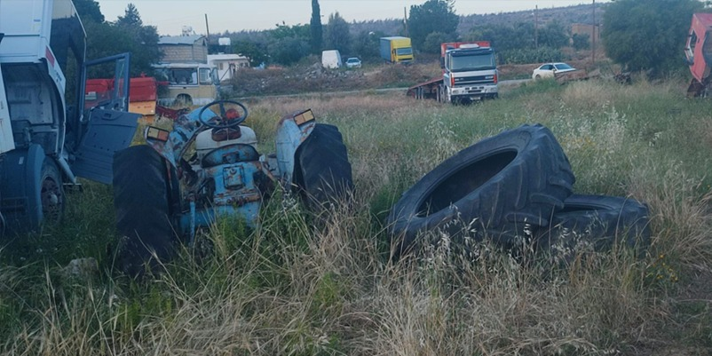

Çamlıköy’de temizlik ve denetim çalışmaları başlatıldı

Lefke Çevre ve Ekoloji Derneği, Çamlıköy'de temizlik ve denetim çalışmalarının başlatıldığını bildirdi.
Dernekten yapılan "Çamlıköy'de çevre alarmı" başlıklı açıklamada, derneğin, çevre kirliliği ile ilgili ihbarlar üzerine Çamlıköy’de incelemelerde bulunduğu aktarıldı.
Ziyarette, köy içinde çöp yığınları, moloz döküntüleri ve hurda araçların çevreyi ciddi şekilde tehdit ettiğinin tespit edildiği belirtilen açıklamada, durumun vahameti üzerine bulguların ilgili makamlara iletildiği belirtildi.
İhbarın ardından Lefke Kaymakamının bölgeye giderek yerinde inceleme yaptığı ve yetkililerden bilgi aldığı belirtilen açıklamada, Kaymakamlığın raporu doğrultusunda konunun Lefke Çevre Dairesi'ne sunulduğu ifade edildi.
Çevre Dairesi ekiplerinin de bu kapsamda harekete geçtiği ve bölgede temizlik ile denetim çalışmalarının başlatıldığı belirtilen açıklamada, ayrıca olayın sorumlularının tespiti için de gerekli süreçlerin yürütüldüğü kaydedildi.
Köy içerisindeki kırsal kesim arazisinde oluşan görüntü kirliliğinin yanı sıra çevre ve halk sağlığı açısından da ciddi riskler bulunduğuna dikkat çeken Lefke Çevre ve Ekoloji Derneği, köy halkının desteğiyle sürecin takipçisi olacaklarını belirtti.